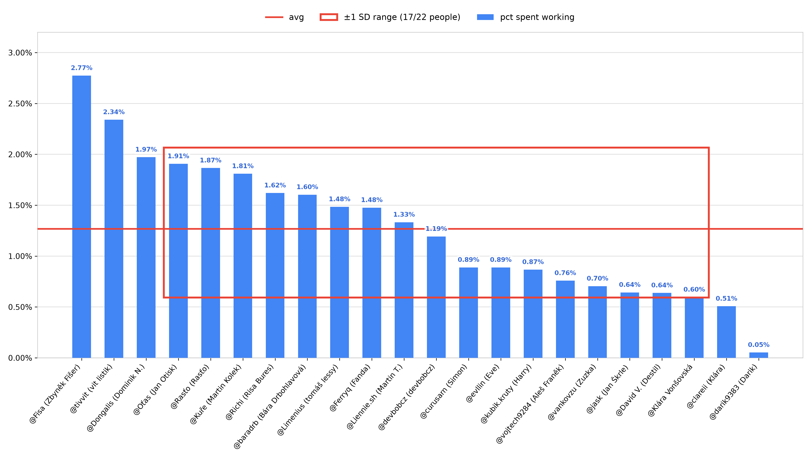
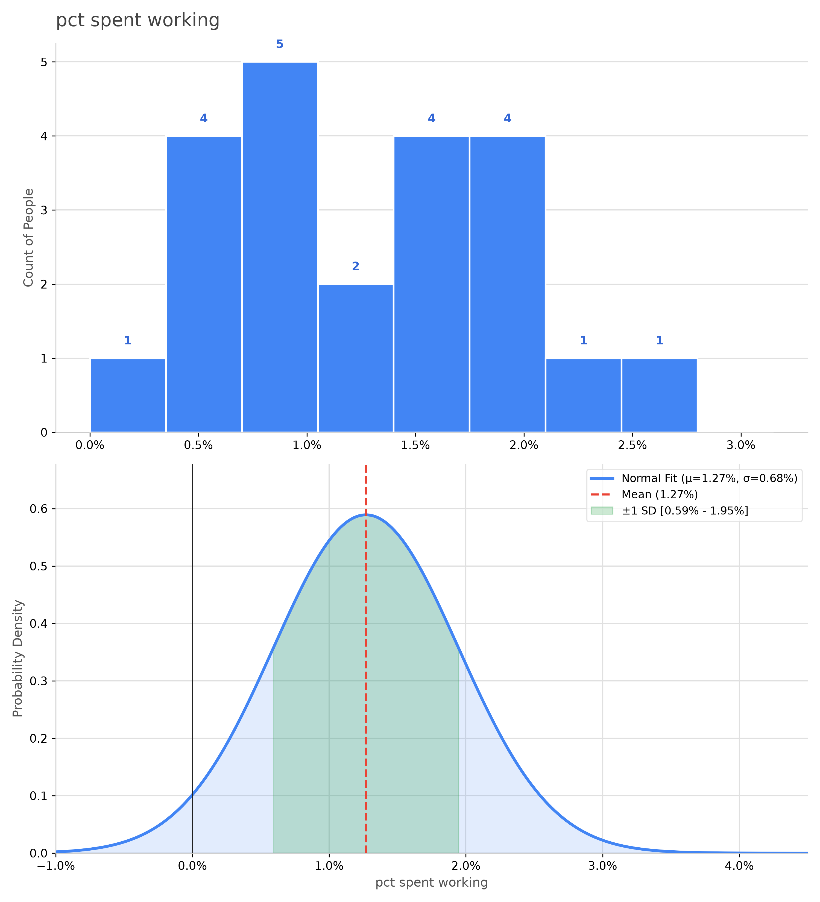
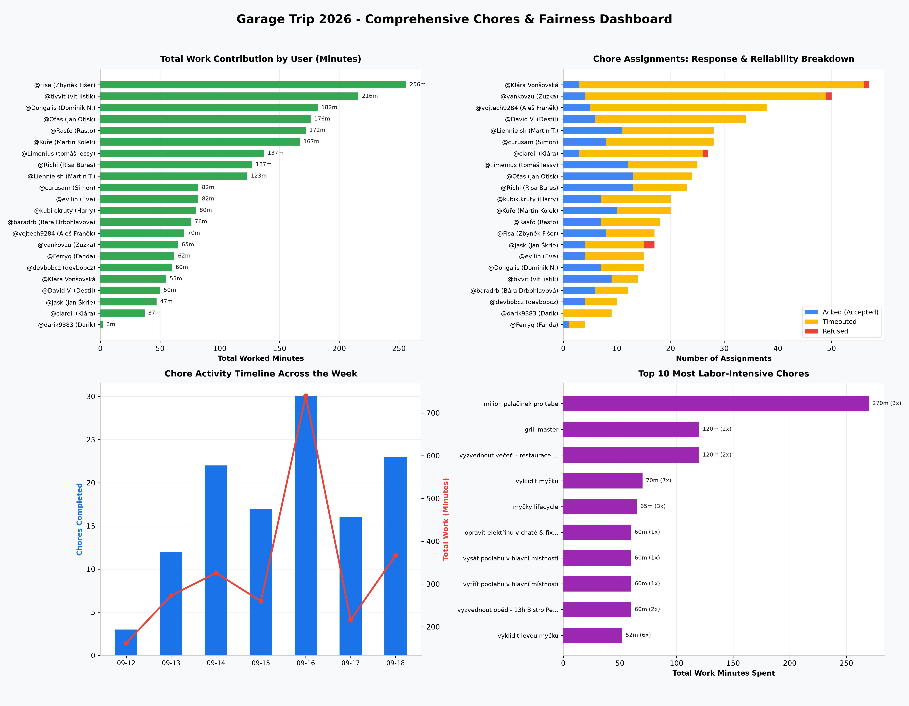

Official statistical evaluation of cabin chore distribution and system fairness (Sep 12 – Sep 18, 2026)



| # | Participant | % Working | Worked Time | Chores | Presence | Assigned | Acked (%) |
|---|---|---|---|---|---|---|---|
| 1 | @Fisa (Zbyněk Fišer) | 2.77% | 256 min (4.3h) | 9 | 153.8h | 17 | 8 (47%) |
| 2 | @tivvit (vit listik) | 2.34% | 216 min (3.6h) | 11 | 153.8h | 14 | 9 (64%) |
| 3 | @Dongalis (Dominik N.) | 1.97% | 182 min (3.0h) | 8 | 153.8h | 15 | 7 (47%) |
| 4 | @Oťas (Jan Otisk) | 1.91% | 176 min (2.9h) | 15 | 153.8h | 24 | 13 (54%) |
| 5 | @Rasťo (Rasťo) | 1.87% | 172 min (2.9h) | 7 | 153.7h | 18 | 7 (39%) |
| 6 | @Kuře (Martin Kolek) | 1.81% | 167 min (2.8h) | 13 | 153.8h | 20 | 10 (50%) |
| 7 | @Richi (Risa Bures) | 1.62% | 127 min (2.1h) | 13 | 130.7h | 23 | 13 (57%) |
| 8 | @baradrb (Bára Drbohlavová) | 1.60% | 76 min (1.3h) | 7 | 79.0h | 12 | 6 (50%) |
| 9 | @Limenius (tomáš lessy) | 1.48% | 137 min (2.3h) | 14 | 153.8h | 25 | 12 (48%) |
| 10 | @Ferryq (Fanda) | 1.48% | 62 min (1.0h) | 2 | 70.0h | 4 | 1 (25%) |
| 11 | @Liennie.sh (Martin T.) | 1.33% | 123 min (2.0h) | 12 | 153.8h | 28 | 11 (39%) |
| 12 | @devbobcz (devbobcz) | 1.19% | 60 min (1.0h) | 5 | 83.8h | 10 | 4 (40%) |
| 13 | @curusarn (Simon) | 0.89% | 82 min (1.4h) | 9 | 153.8h | 28 | 8 (29%) |
| 14 | @evllin (Eve) | 0.89% | 82 min (1.4h) | 5 | 153.8h | 15 | 4 (27%) |
| 15 | @kubik.kruty (Harry) | 0.87% | 80 min (1.3h) | 7 | 153.8h | 20 | 7 (35%) |
| 16 | @vojtech9284 (Aleš Franěk) | 0.76% | 70 min (1.2h) | 6 | 153.8h | 38 | 5 (13%) |
| 17 | @vankovzu (Zuzka) | 0.70% | 65 min (1.1h) | 5 | 153.8h | 50 | 4 (8%) |
| 18 | @jask (Jan Škrle) | 0.64% | 47 min (0.8h) | 5 | 121.8h | 17 | 4 (24%) |
| 19 | @David V. (Destil) | 0.64% | 50 min (0.8h) | 8 | 130.7h | 34 | 6 (18%) |
| 20 | @Klára Vonšovská | 0.60% | 55 min (0.9h) | 5 | 153.8h | 57 | 3 (5%) |
| 21 | @clareii (Klára) | 0.51% | 37 min (0.6h) | 4 | 121.7h | 27 | 3 (11%) |
| 22 | @darik9383 (Darik) | 0.05% | 2 min (0.0h) | 1 | 63.8h | 9 | 0 (0%) |